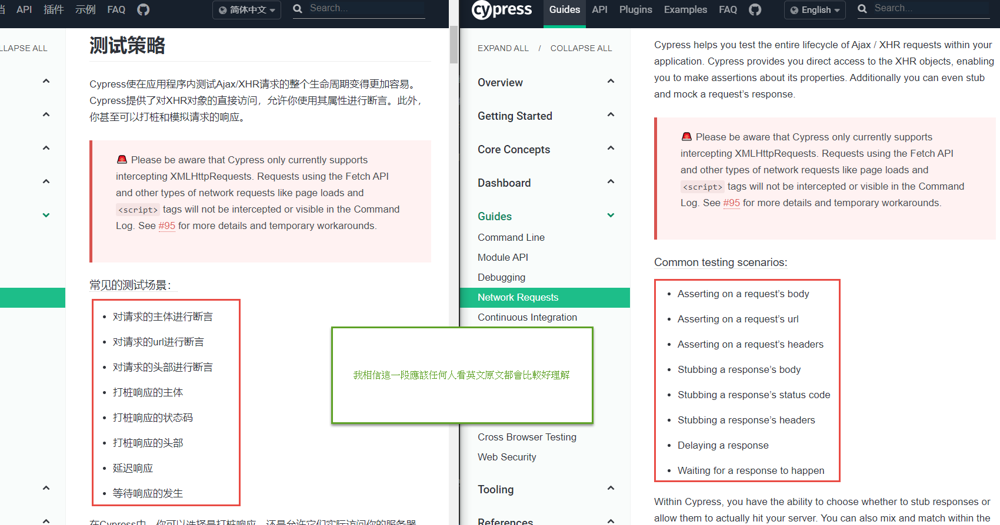
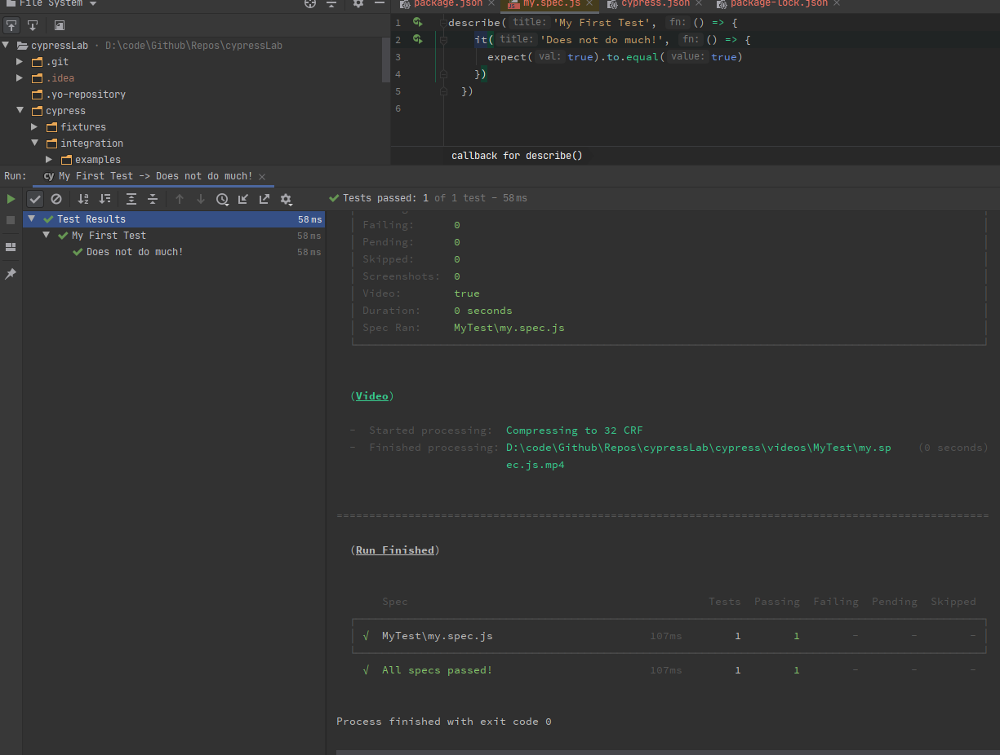
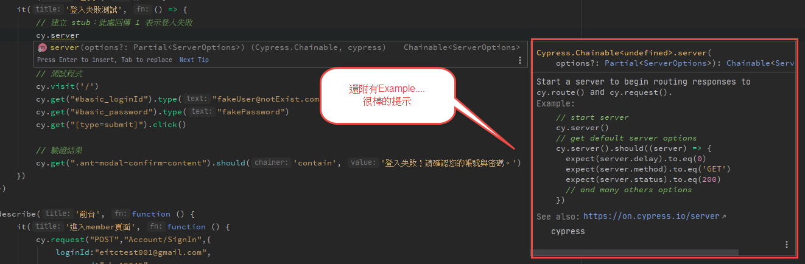
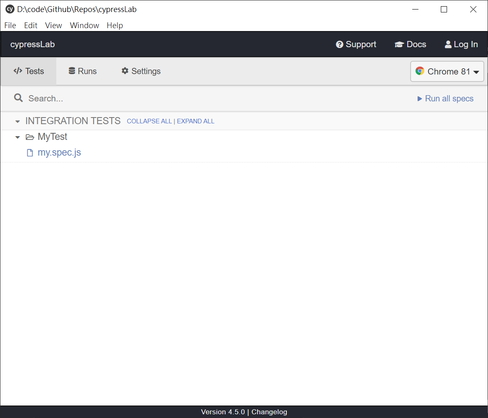
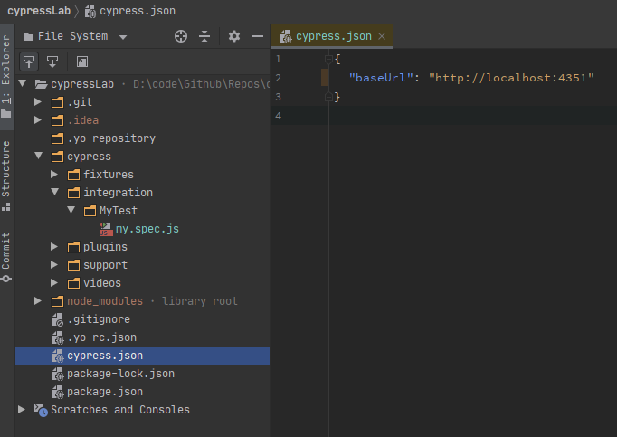
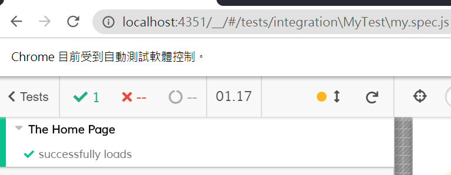
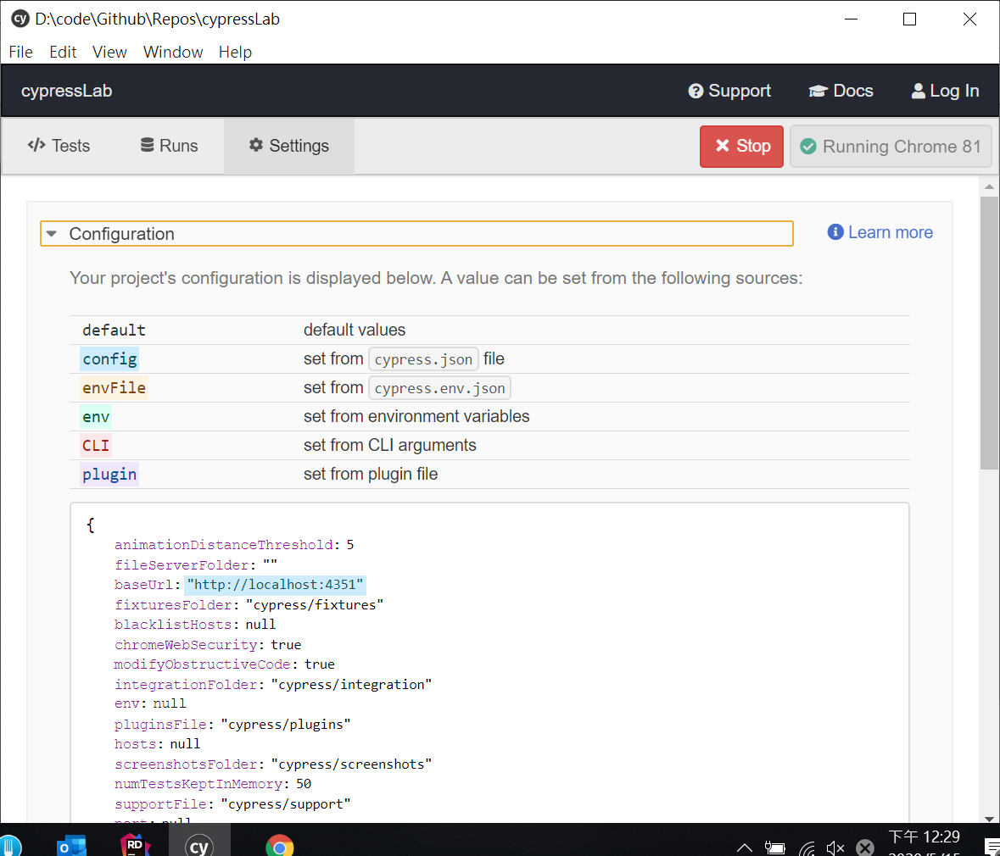
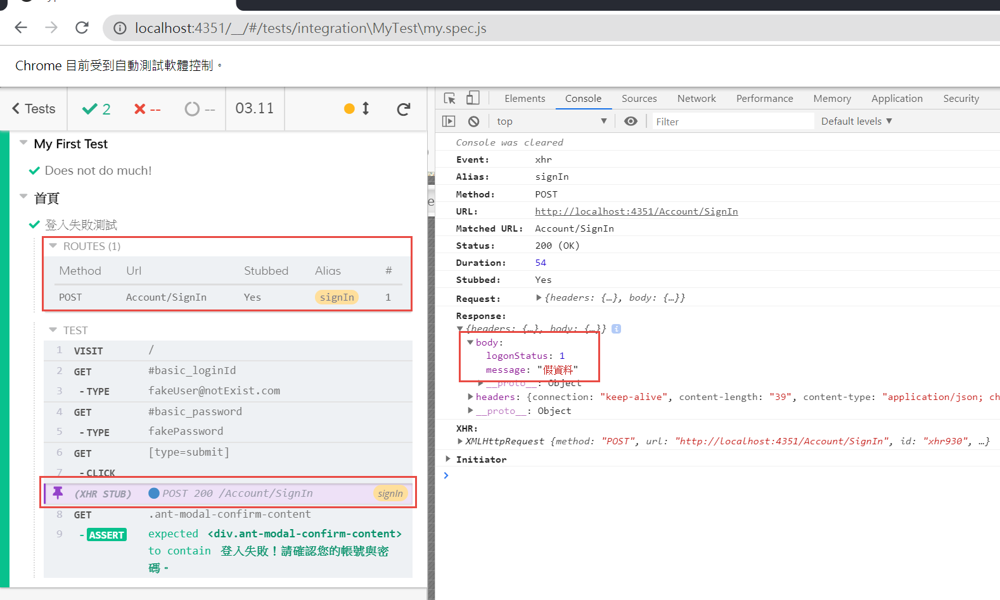

會開始學習cypress.io的原因是因為看到[Cypress 2] 看官方文件學習 Command & Assertion這篇，另外 Joey 也推薦這一套工具，在這一篇文章中介紹的是cypress.io的一些基礎用法，更深入的部分：Cli、CI 整合都還沒有辦法介紹給大家，後續如果還有機會的話再撰寫成系列文章跟大家分享。
End To End Testing
e2e 測試其實就是模擬真實用戶情境、驗證被測試系統及其組件是否能順利工作、驗證所產生的資料是否正確。不論是在軟體開發的哪個生命週期裡面，通常會有一些角色會去執行 e2e 測試，用來驗證產品是否如預期般運作
傳統手工測試人員
在程式設計師開發完畢之後進行驗收的人員，他們大概的特色就是不會寫程式，都是用手動的方式去驗證功能是否正確；通常這樣的人員對於領域知識都很了解，但是對於程式設計的背景知識相對薄弱；恰好與程式設計師相反、互補。通常這個角色在公司不會只有這一項工作要做，往往都是兼職測試；實務上它們可能的身份還會有專案經理、產品經理、客服人員、產品教育訓練講師…等等
程式設計師
在程式設計師開發完畢之後，也會有一些人會對自己開發的成果進行測試。通常它們的手段就是在 local，或者是所謂的開發機上面直接手動測試。對於這個角色而言，e2e 測試的確不是他們的重點，它們更多的時間、精力會放在單元測試上面。
測試人員
在規模比較大的公司裡面才會有可能存在的專職測試人員，因為是全職投入測試的關係，往往他們會需要用到自動化測試工具來協助它們完成測試任務。也因此它們會需要有程式設計的知識，以及動手實作的能力；相比於程式設計師較重視單元測試，他們會更著重於使用各種測試技術和方法來測試和發現軟體中存在的軟體缺陷，而 e2e 測試只是幫助他們完成他們任務的其中一環而已
有什麼工具可以幫助我們完成 E2E Testing？
Katalon Recorder (Selenium tests generator)
Katalon Recorder (Selenium tests generator)
作為初學 e2e 測試的人，我會推薦先使用這一套上手，大概了解一下 e2e 測試是怎麼一回事
因為用這一套可以錄影，也就是將你操作瀏覽器的步驟給錄下來，事後也可以針對每一個步驟進行修改；而且可以透過匯出程式碼的功能，將錄影下來的步驟透過程式碼執行；對於入門應該算蠻有效的。
這一套適合的對象應該是初學者、或是比較不需要撰寫程式的手動測試人員會較合適，至於付費軟體 katalon studio 就不予置評了，因為我沒有用過。
testcafe.js
之前寫過一篇使用 testcafe 做 E2E 測試，現在看來當時感覺不錯的優點，現今應該都算標準配備了，是胃口被養刁了嗎？總覺得時至今日，testcafe.js 的優勢跟人相比，記憶點只剩下支援typescript、官方提供三大框架支援。
這一套適合的對象應該是喜歡使用typescript的開發人員、或者是前端三大框架(React, Vue, Angular)的使用者，因為可以直接在測試程式中透過官方提供的框架 Selector 去指定框架的元件，這個很加分
cypress.io
官方自己說的優點
基本上官方自己有說他們的優勢在哪邊，老實說我有很多東西看不太懂，或者是說沒能真正理解。
所以底下我就節錄我看得懂，或是說我覺得這應該不錯的部分
因为 Cypress 是本地安装的, 它可以从系统层提供对自动化任务的服务. 也就是说，比如截图或录屏, 一般的命令执行和请求成为可能.
在 CI 過程提供截圖快照，或者是錄影，在某些時候是很有用的
你的测试代码可以访问任何只要是你应用能访问的东西。
所以我可以很直覺的撰寫測試代碼，這應該是優點吧
通过修改响应状态码为 500 测试你的应用如何对错误做出响应的。
這個是說我能夠修改回應的結果(狀態)？ 如果可以的話，不就是像 mock 那樣的東西了嗎？
你不再需要使用 UI 来构建状态；这意味着你不必访问登录页面，输入用户名和密码，并等待页面加载和/或重定向到你运行的每个测试；Cypress 让你能够快捷方式并以编程方式登录
這意味著我如果有一些狀態是需要經由繁瑣的 UI 互動完成之後才能測試的功能，我可以透過其他的方式做到，聽起來很不錯。
测试运行时使用开发者工具，你可以看到每个控制台消息，每个网络请求。 你可以检查元素，甚至可以在规范代码或应用程序代码中使用调试器语句。 不会有信息丢失 - 你可以使用你已经熟悉的所有工具。 这使你可以同时测试和开发所有内容。
這絕對是優點，透過 cypress 執行測試時，我可以使用
cy.pause()暫停下來，並悠閒地開啟 F12 利用 Chrome Develop tools 來查看請求、回應，試用了一下真的很不錯
我覺得是優點的優點
- 官網有中文文件
- Cypress 是免費、開源的
- 安裝方便：只需要透過一行指令就整個裝好，不需要再安裝其他別的東西
- 圖形化介面及完整的指令列工具
官網文件並沒有 100%都是中文，但起碼基本的文件都已經是簡體中文了。如果你的英文再好一點，官方的英文文件應該對你不是問題。
Cypress Document
但還是有一些文件看起來是用機器翻譯的，文法非常地不通順，這種時候還是看英文的會比較好，例如下面這個例子

ＩＤＥ整合
這些資訊在官方文件都有說明介紹，因此這邊就略過說明，請自行前往觀看。在 IDE 整合的這一塊，最好是仔細的看過一次照著做一遍，會對開發很有幫助。
VSCode
Intelli J
在 Rider 的 plugin 裡面，我直接安裝了cypress的 plugin，並且依照官網指示，在專案的套件中，也安裝了cypress-intellij-reporter，隨後在 Rider 的測試檔案內，就可以直接透過點擊 Icon 的方式去執行 e2e 測試了

看樣子其實也只是幫你把特定的測試透過指令列的方式去執行，如果執行某一個測試，會發現在測試執行之前，it的後面會幫你自動加上去only，測試完再改回來

How To Start
啟動 local 網站
雖然你可以測試已經deploy出去的應用程式，但官方比較推薦的是測試local的應用程式，對此官方文件解釋原因
- cypress 在整個開發流程當中都很有用
- 你可以同時進行測試、開發，其實就是利用 cypress 透過 TDD 方法開發你的應用程式
- 你可以控制 local 的應用程式、但你無法控制 deploy 出去的應用程式
cypress 官方文件提到：许多 Cypress 的用户都选择在本地运行绝大多数的集成测试，而在生产环境上运行少数的冒烟测试。
節錄 wiki冒煙測試：冒煙測試僅僅是在短時間廣泛地覆蓋產品功能。如果關鍵功能無法正常工作或關鍵 bug 尚未修復，那麼你們的團隊就不需要浪費更多時間去安裝部署以及測試
講白一點就是，大部分的整合測試都在 local 做，你只需要在 production 作一些關鍵性的測試即可
訪問 local 網站
當然要先安裝好cypress，安裝完畢後會在專案目錄下自動建立cypress子目錄；然後把 cypress 提供的範例測試程式cypress/integration/examples清掉，接著建立自己的測試程式，此處我們就命名為cypress/integration/myTest/my.spec.js
1 | // cypress GUI |
這個時候你可以先開啟 cypress GUI，會發現我們建立的測試檔案已經存在了

接著撰寫測試內容
1 | // cypress/integration/myTest/my.spec.js |
cypress 設定
cypress 有提供設定，可以將測試網站的網址記錄在這邊

這樣，就可以在測試程式中直接以相對路徑來撰寫網址
1 | // cypress/integration/myTest/my.spec.js |

當然這邊只是示範一下有這個設定檔，其他設定項目當然還是請參考網站介紹囉
另外，在 GUI 介面，你也可以瀏覽這些資訊，這個介面甚至用顏色告訴你，目前吃的設定值是甚麼，設定的來源是哪裡
這個是我第一次看到這樣的概念跟設計，感覺很不錯

測試策略
前幾個中文文件應該都是人工翻譯的對吧，後面講到一些專有名詞怎麼感覺就是非常地不通順呢？所以，我覺得還是用我能夠理解的文法稍微說明一下好了
Seeding Data
在即將撰寫 e2e 測試之前，通常我們為了測試順利進行，會需要做一些準備工作，例如：如果我們想要測是一個登入的行為，那麼我們至少會需要在後端資料庫有一個測試的帳號用來驗證。
在測試執行之前，先一步建立好這些需要的數據資料，並且在測試完畢後清除，這就是set up、tear down
cypress提供了cy.exec()、cy.task()、cy.request()，搭配before()、beforeEach()這兩個hooks來做到這件事情
所謂的 Hooks 就是在測試前後會觸發的事件，具體要看測試框架提供那些。
1 | describe("The Home Page", function () { |
以官網的範例來看，在測試執行之前，可以透過cy.exec()用 npm 去執行那些你已經寫好的scripts，或者是為了省去實際測試程式的前置動作，將必要的互動直接打到後端 API 去執行。
但是官網也有提到，雖然不是錯誤的做法，但這樣的確是會影響到程式的可讀性、維護性；另外也因為所有的東西都是實際與後端溝通，再加上初始化的動作等等，這樣的一個測試會很慢
Stubbing the server
以前的應用程式大概都是從後端直接吐整個頁面，所有的操作行為都直接返回HTML，這樣的話的確是沒甚麼好改的；但現代化的應用程式大部分都已經改用 json 與後端交換資料，我們可以強制 server 端回傳我們想要的資料內容
直接看具體的範例來學習怎麼使用stub
1 | describe("首頁", () => { |

可以看到在Routes的部份有顯示我們模擬了一個 Route 的 stub，然後再下方的XHR STUB也表示這個請求，是由我們設定好的 Stub 提供回應結果；在右側也可以看到模擬接收的Response內容就是我們在測試程式中撰寫的資料